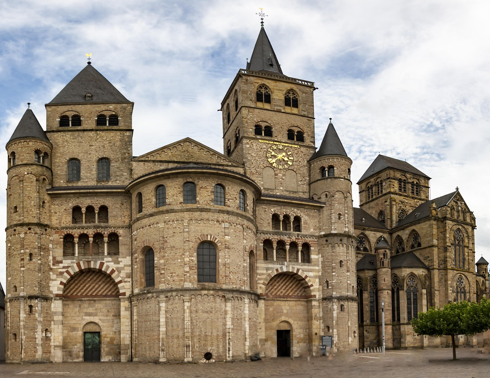

Erlebe die reiche Geschichte, die römische Architektur und die charmante Altstadt der ältesten Stadt Deutschlands
Die drei schönsten Sehenswürdigkeiten in Trier
Porta Nigra
about this place
Kaiserthermen
about this place

Trier Saint Peter's Cathedral
about this place
Dein Reiseführer
"Ich arbeite seit über 10 Jahren als erfahrener Reiseleiter.
Ich spezialisiere mich auf Kultur, Geschichts und Stadtführungen mit Leidenschaft und Fachwissen.
Mein Ziel ist es, für jeden Besucher unvergessliche und spannende Erlebnisse zu schaffen."